library(igraph)
library(networkD3)
library(ggraph)
library(ggforce)Week 3: Introduction to Network Visualization
Introduction
The ability to visualize complex information is a central strength of social network analysis. It is important to consider principles of good visualization as it is easy to seduced by the value of a network visualization when it can complicate comprehension rather than facilitate it. Thankfully, there are numerous strategies for plotting networks to help tell stories about your data.
You can accomplish a lot of these tasks in R.
Note: Katherine Ognyanova delivers the best workshops on visualization and her materials are here.
Note: There are numerous network visualization packages in R, including the network package and ways of visualizing networks in the ggplot framework (see ggraph) as well as network movie packages, packages for correlational networks, bipartite networks, discpline specific networks, and other specific circumstances. We will focus primarily on igraph here with a brief ggraph example.
Note: You can also accomplish a lot of visualization tasks in Gephi, a point-and-click program. There are downstream limitations for Gephi in terms of statistical analysis and it presents some replication concerns, but it can generate a useful visualization.
Visualization using igraph
First, we need to load the igraph (the workhorse for the course), networkD3 (for interactive graphs), and ggraph (for network viz) package into R. ggforce is a package to add elements to ggraph.
Bringing Data Into igraph
There are many different ways to bring data into igraph. Remember that the two main ways to store network data is either an edge list (two columns: one sender, one receiver) or an adjacency matrix (i rows and j columns are the same people and the cells indicate a connection between the i row and j column). If you can make an edgelist or a matrix you can load the data into igraph.
Note: You can find a lot of cool networks through the links here.
First, we can bring in the data into r using the base function read.csv(). The first example is an undirected toy network. Note that we will keep the column names as indicated by “header=T” and that we store the matrix as a matrix with as.matrix.
toy.undirected <- as.matrix(read.csv("data/simple_undirected.csv", header=T))
toy.nodes <- read.csv("data/toy_node_attrs.csv")
print(toy.undirected) alt1 alt2 alt3 alt4 alt5 alt6
[1,] 0 0 1 0 0 0
[2,] 0 0 1 0 0 0
[3,] 1 1 0 1 0 0
[4,] 0 0 1 0 1 1
[5,] 0 0 0 1 0 1
[6,] 0 0 0 1 1 0If we look above we can see one of the main ways to store network data - the adjacency matrix. Adjacency matrices consist of nodes in the rows and columns. In one mode networks, the rows and columns are the same. The cells in the matrix represent the presence of a connection (or not). This graph is undirected - so it is symmetrical - and the unweighted - so the numbers are just 1s and 0s.
We have also loaded a file of nodal attributes or a list of node properties.
igraph requires that we make an igraph object and there are several ways of doing so. In this example, we use graph_from_adjacency_matrix to make this object. We indicate that the network is undirected.
toy.g <- graph_from_adjacency_matrix(toy.undirected, mode="max")Now we use igraph notation - V(g)$thing <- thing - to store node attributes in the igraph object if both objects are ordered the same way.
V(toy.g)$name <- toy.nodes$name
V(toy.g)$attribute <- toy.nodes$attr1We can use plot.igraph() function to visualize the graph. We use the attribute that was introduced from nodes to color the nodes.
plot.igraph(toy.g, vertex.color=V(toy.g)$attribute) 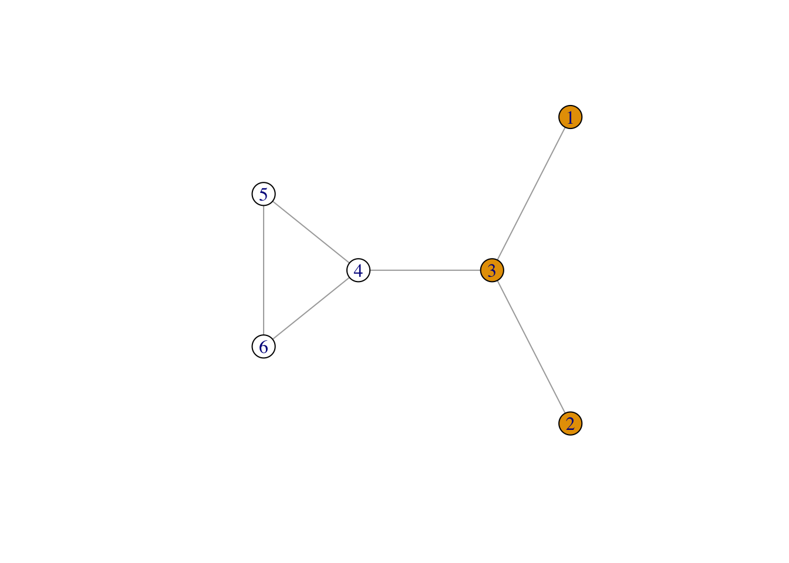
The above toy graph consisted of undirected ties. Some graphs have directed ties. Let’s check out how igraph plots these.
Note we can also use the graph_from_adj_list function to bring adjacency lists into igraph. If you want an undirected graph, then mode=“all”. And if you want a directed graph of sent ties, then mode=“out”.
toy.directed <- as.matrix(read.csv("data/simple_directed.csv", header=T))
toy.directed.g <- graph_from_adjacency_matrix(toy.directed, mode="directed")You can store node or vertex attributes using V(g)$attribute <- Attribute as follows (make sure the order is the same)
V(toy.directed.g)$name <- toy.nodes$name
V(toy.directed.g)$attribute <- toy.nodes$attr1And plot the directed graph.
plot.igraph(simplify(toy.directed.g), vertex.color=V(toy.directed.g)$attribute)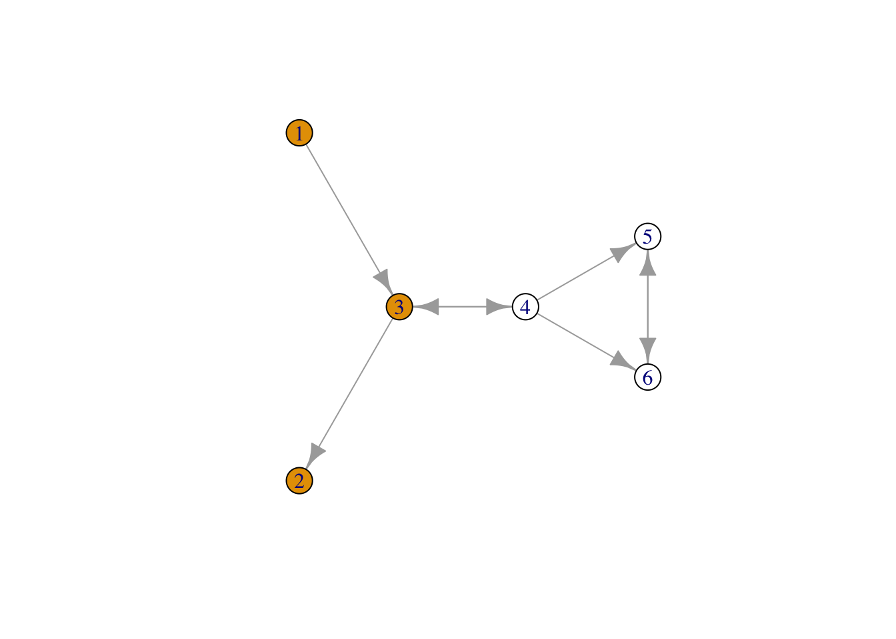
Note that the simplify function removes any loops or multiple edges.
Bringing Data into igraph: edge lists
You can also write edge lists directly into igraph using make_graph(). igraph will read each pair as an edge. Here we have indicated an undirected graph by directed=F.
edge.list <- c(1,3, 2,3, 3,4, 4,5, 4,6, 5,6)
exa_g <- make_graph(edge.list, directed=F)
V(exa_g)$attr1 <- c(1,1,1,0,0,0) # attach the attribute vector
plot.igraph(exa_g, vertex.color=V(exa_g)$attr1*2) # how’s it look?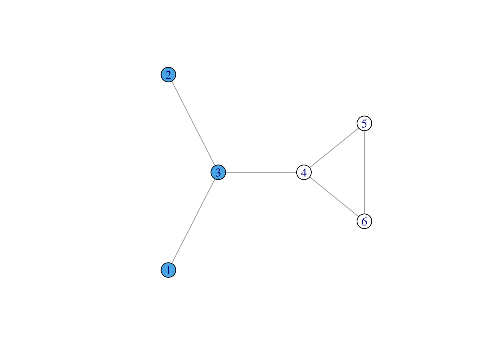
We can also add multiple kinds of edges (and other attributers) in the same way as node attributes, but calling edges instead of vertices: E(g)$attribute <- Attribute. Or like this:
E(exa_g)$type <- c("friend", "friend" , "friend", "family", "family", "family") # attach the multiplex vector
plot.igraph(exa_g, vertex.color=V(exa_g)$attr1*2, edge.color=c("red","green")[(E(exa_g)$type=="family")+1]) # how’s it look?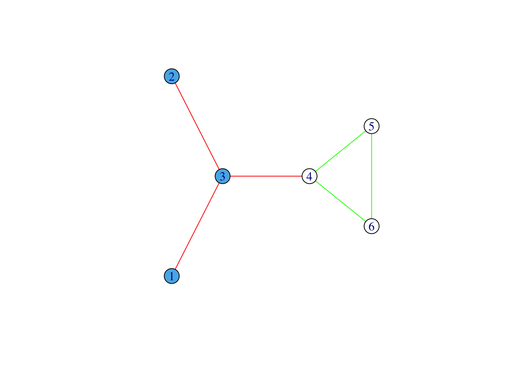
Bringing data in igraph using read_graph
We can bring data into igraph via other programs like the networks program Pajek. Pajek is a popular program used to visualize and analyze social networks. The file extensions for Pajek include .net for the network file and .clu for attributes which are often kept in separate files.
read_graph() will read networks from other programs. format= identifies the type of file (e.g. the program in which the file was generated, including Pajek and Gephi).
This Valente data captures the friendship ties in a fifth grade classroom.
valente <- read_graph("data/valente.net", format="pajek")
class(valente)[1] "igraph"igraph basics
We can use print for an overview of the igraph object. Here is the documentation on how to read the overview.
“The first line always starts with IGRAPH, showing you that the object is an igraph graph. Then a four letter long code string is printed. The first letter distinguishes between directed (‘D’) and undirected (‘U’) graphs. The second letter is ‘N’ for named graphs, i.e. graphs with the name vertex attribute set. The third letter is ‘W’ for weighted graphs, i.e. graphs with the weight edge attribute set. The fourth letter is ‘B’ for bipartite graphs, i.e. for graphs with the type vertex attribute set.” (http://igraph.org/r/doc/print.igraph.html)
print(valente)IGRAPH c451f05 DN-- 37 145 --
+ attr: id (v/c), name (v/c)
+ edges from c451f05 (vertex names):
[1] 34->13 34->7 34->11 6 ->34 6 ->13 6 ->11 6 ->9 9 ->7 9 ->11 9 ->13
[11] 9 ->34 9 ->6 11->9 11->6 11->13 11->34 13->34 13->6 13->7 7 ->1
[21] 7 ->8 1 ->7 1 ->8 27->7 27->29 27->19 27->4 27->13 8 ->1 8 ->32
[31] 8 ->21 8 ->17 18->7 18->1 18->4 18->17 2 ->32 2 ->7 2 ->21 2 ->30
[41] 2 ->37 4 ->27 4 ->21 4 ->7 4 ->19 4 ->18 32->8 32->30 21->27 21->30
[51] 21->19 19->33 19->32 19->30 19->21 33->17 33->4 33->21 33->30 17->32
[61] 17->33 17->8 17->21 17->4 17->30 17->19 30->21 30->33 30->17 30->32
[71] 23->26 23->27 23->18 35->23 35->17 35->2 35->20 20->3 20->30 20->17
+ ... omitted several edgesThe Valente classroom graph consists of 37 nodes or students with 145 ties between them. It is a directed graph (D) with names (N). It is not weighted or bipartite. There is a vector attributes for ids and names.
Reading Attributes
Next, we bring the gender attribute (valente.clu) file from Pajek into R. We skip the first line (skip=1) because pajek files include one additional line that is not needed.
We store attributes as follows: V(g)$attribute
gender <- as.matrix(read.table("data/valente.clu", skip=1))
# attaching the attribute, make numeric
V(valente)$gender <- as.vector(gender) Let’s look at the graph. What can we learn about this classroom given the friendship nominations? Note the attribute key: blue=girls and white=boys
plot.igraph(valente) 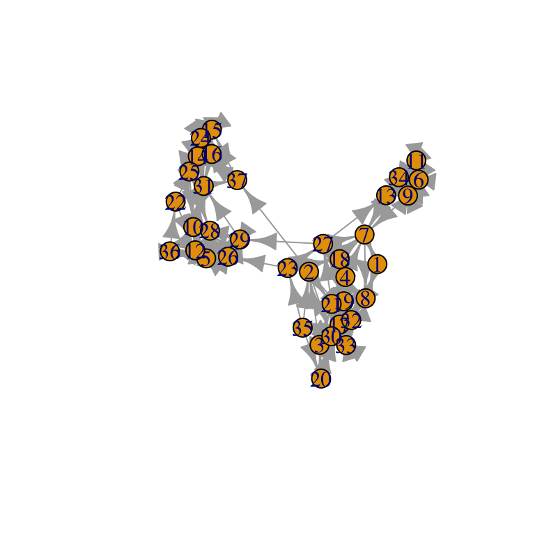
We can add attributes to the graph in several ways. The first and most obvious way is to identify differences in a nominal attribute by different colored nodes.
This assigns attribute-based colors to nodes: vertex.color=V(g)$attribute
plot.igraph(valente, vertex.color=V(valente)$gender*2) 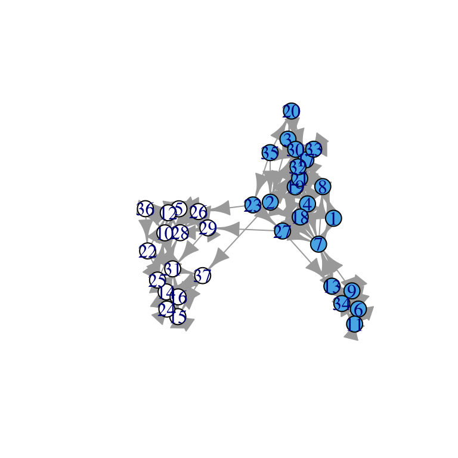
Specifying colors of an attribute
We likely want to control the colors that we are using in our plots. There are several ways to do that. For example, we can set the colors of the attributes that interest us.
Note that in the previous graph we multiplied the attribute by 2 (vertex.color=V(valente)$gender*2) to avoid having the same color for the label/node color
attr.colors <- c("tomato", "gold")
V(valente)$gender <- V(valente)$gender+1
V(valente)$colors <- attr.colors[V(valente)$gender]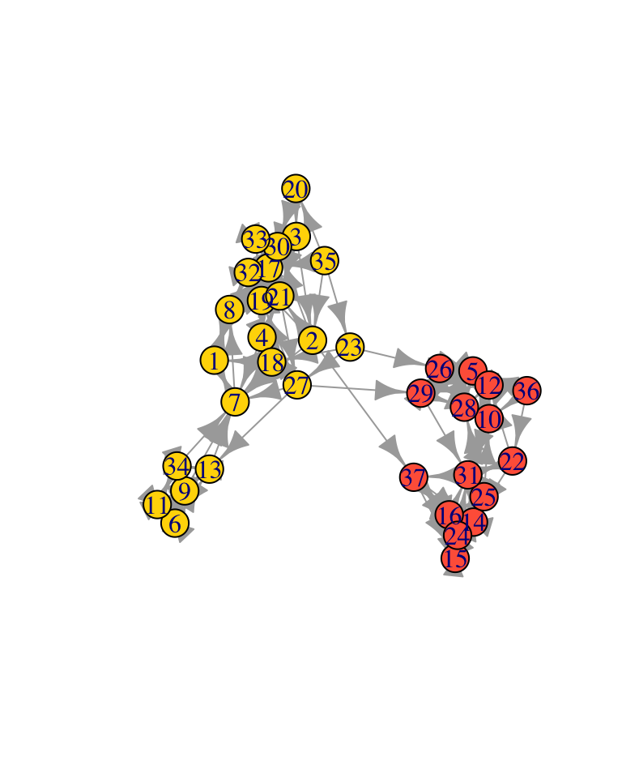
Specifying colors of a graph
If you don’t have an attribute of interest you can set vertex.color in the same way you did above, but with an color instead of an attribute.
plot.igraph(valente, vertex.color="blue")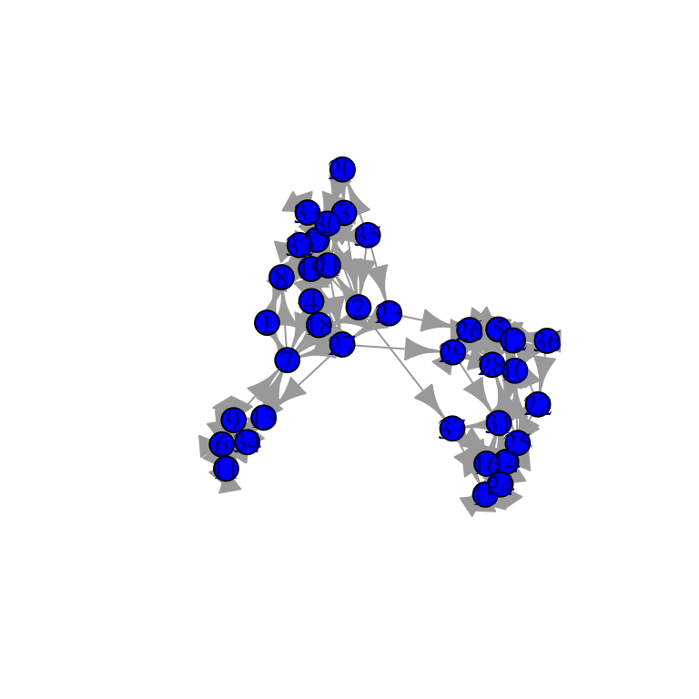
Other Graph Aesthetics
We can also use nodal size to convey something about the magnitude of a particular actor. Here we make a vertex attribute for degree (the total number of edges connected to a node) and then set the vertex size.
vertex.size=V(graph)$attribute
V(valente)$node.size <- degree(valente)
plot.igraph(valente, vertex.color=V(valente)$colors,
vertex.size=V(valente)$node.size)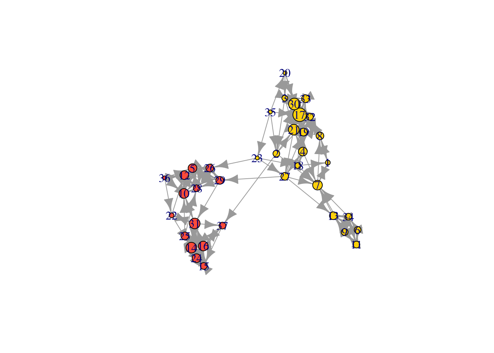
We can can adjust this a bit by adding a multiplier. We can also change the shape of the node.
vertex.size=V(valente)$node.size*2
vertex.shape=c(“circle”, “square”, “csquare”, “rectangle”, “crectangle”, “vrectangle”, “none”)
V(valente)$node.size <- degree(valente)
plot.igraph(valente, vertex.color=V(valente)$colors,
vertex.size=V(valente)$node.size*2, vertex.shape="square")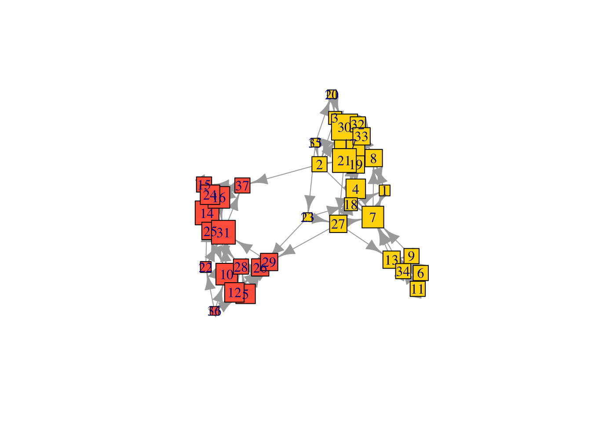
The most annoying default for R is the arrow size in directed graphs. You can change that with edge.arrow.size=.25
plot.igraph(valente, vertex.color=V(valente)$colors,
vertex.size=V(valente)$node.size*2, edge.arrow.size=.25)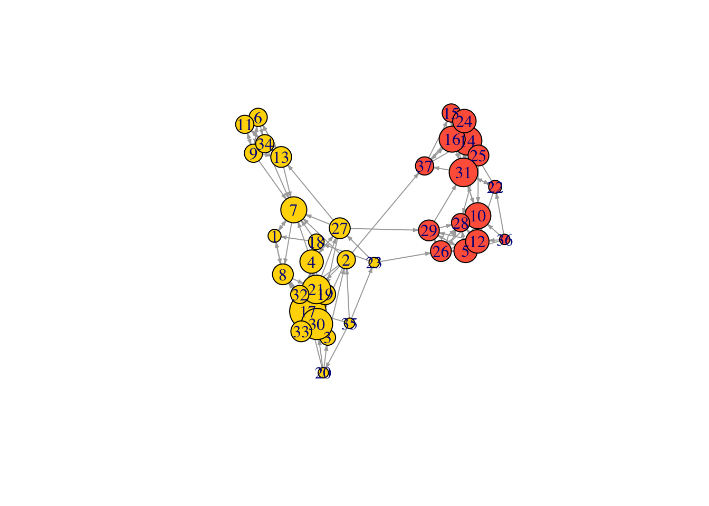
We can control the width and/or gray scale of edges to convey tie strength or some other characteristic using
edge.width=E(g)$attribute
counts <- seq(from=1, to=10, by=1)
wghts <- sample(counts, size=145, replace=TRUE)
E(valente)$weight <- wghts
plot.igraph(valente, vertex.color=V(valente)$colors, edge.arrow.size=.5,
edge.width=E(valente)$weight)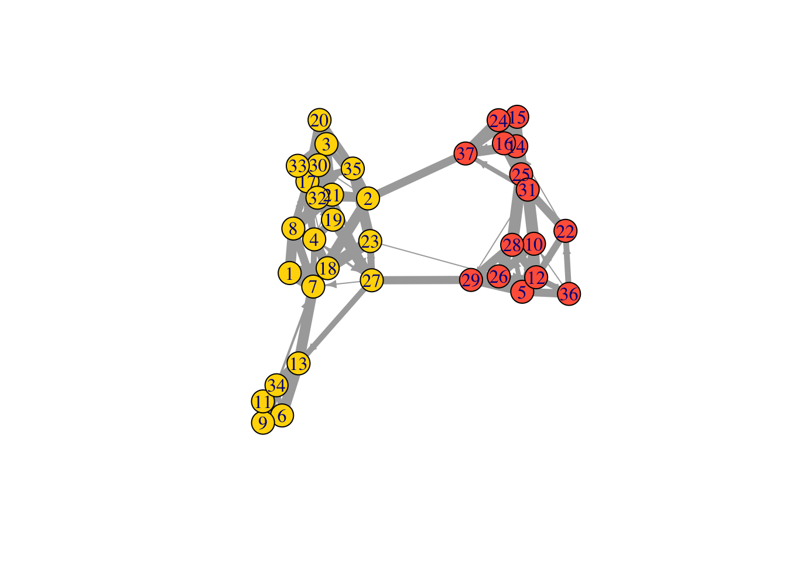
Again, we might want to include a multiplier if the edges are too big.
plot.igraph(valente, vertex.color=V(valente)$colors, edge.arrow.size=.5,
edge.width=E(valente)$weight/2)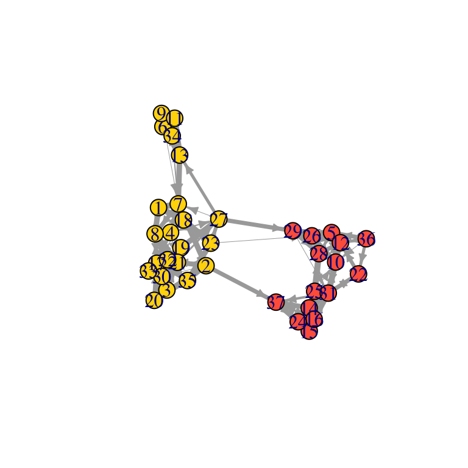
Network Layouts
One of the most important decisions that we make regards the graph layout. Igrpah includes numerous layout options. Which you can find here.
The layout=() function allows you to specify which layout you would like to use. Perhaps you would like to begin by visualizing your network as a circle. layout=layout_in_circle will work.
plot.igraph(valente, vertex.color=V(valente)$colors, edge.arrow.size=.5,
edge.width=E(valente)$weight/2, layout=layout_in_circle)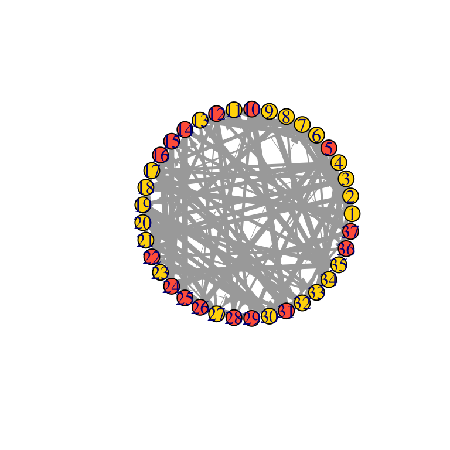
Fruchterman-Reingold - Force-directed alogrithm
The Fruchterman-Reingold layout, layout=layout_with_fr, operates with a physics metaphor. Nodes repel one another and edges act like springs that push the nodes together. This push and pull occurs iteratively until the “system” is balanced. The end result is that the nodes that are connected or share edges cluster together. This layout is useful for small to medium graphs.
plot.igraph(valente, vertex.color=V(valente)$colors, edge.arrow.size=.5,
edge.width=E(valente)$weight/2, layout=layout_with_fr)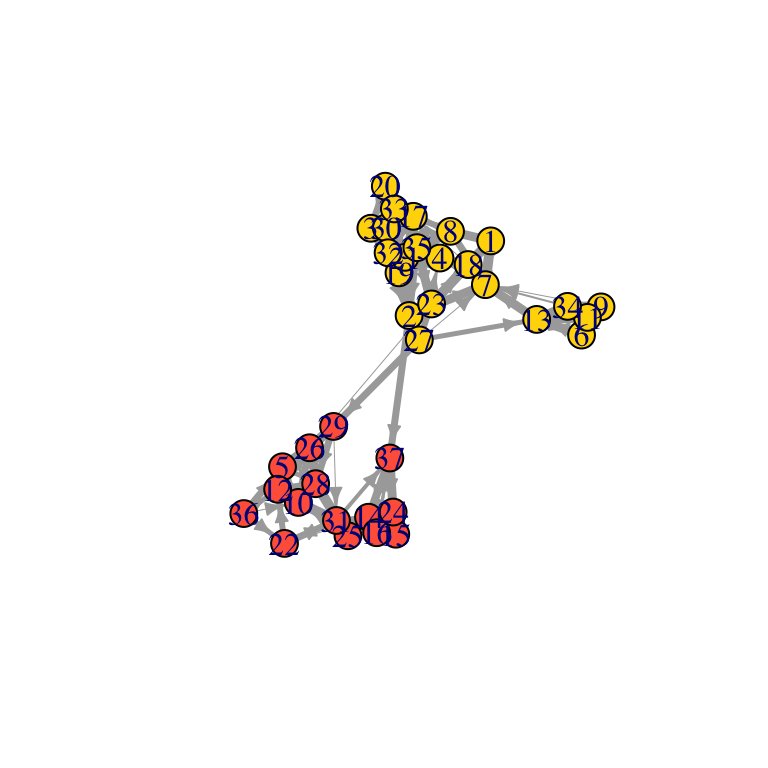
Grid Layout - Make a grid
The grid layout, layout=layout.grid, is a basic layout that just flattens all of the connections into an grid.
plot.igraph(valente, vertex.color=V(valente)$colors, edge.arrow.size=.5,
edge.width=E(valente)$weight/2, layout=layout.grid)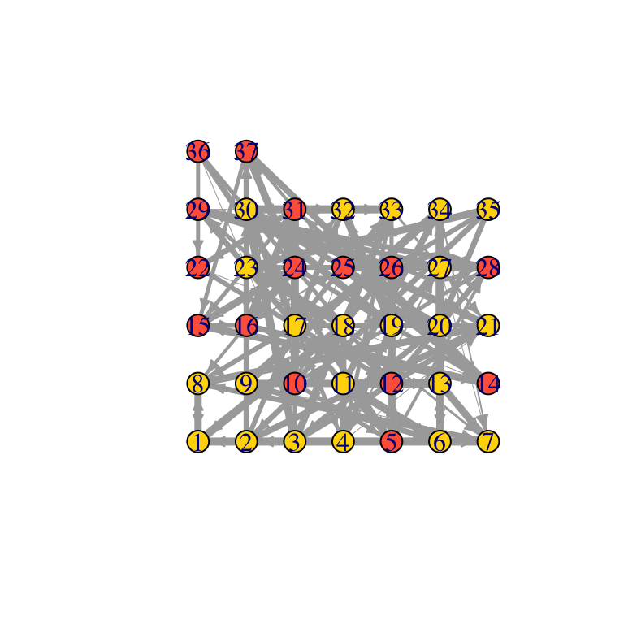
Kamada-Kawai: Spring Embedder Layout
The Kamada-Kawai layout, layout=layout_with_kk, emphasizes shortest path distance between nodes. You get a more graph theoretic layout (e.g., distance is more mathematically meaningful), but trade visual clarity with larger graphs.
plot.igraph(valente, vertex.color=V(valente)$colors, edge.arrow.size=.5,
edge.width=E(valente)$weight/2, layout=layout_with_kk)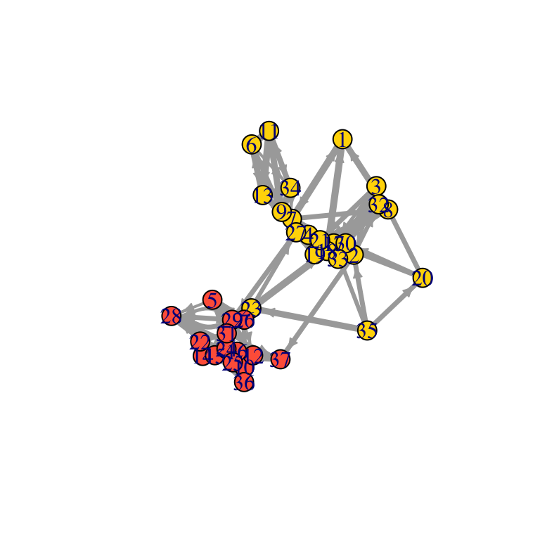
Multidimensional Scaling Layout
MDS layouts, layout=layout.mds, also emphasize shortest paths.
plot.igraph(valente, vertex.color=V(valente)$colors, edge.arrow.size=.5,
edge.width=E(valente)$weight/2, layout=layout.mds)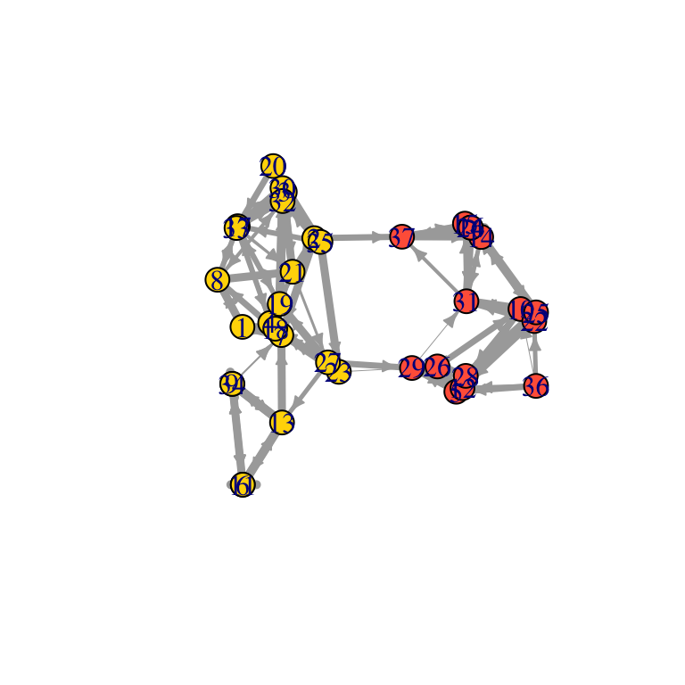
A note on additional layouts
These layout algorithms can struggle with medium to large size networks. igraph includes several algorithms better suited for these tasks that are worth exploring if your network is of a decent size (see layout_with_drl() and layout_with_lgl(). The default layout in the event that you don’t specify is layout_nicely() that is a wrapper for the collection of layouts and uses information from the graph to decide the “best” option.
ggraph: igraph alternative
A relatively recent advancement is graph visualization and (some) analysis that is tidy (tidygraph) and ggplot-style (ggraph). These are more flexible and certainly more intuitive for those familiar with ggplot. The visualizations have a nice aesthetic and sometimes I prefer it (but not always). You can mostly get away with doubling down on visualization in either igraph or ggraph. But some familiarity with both is also likely ot be useful.
Here is an example using the Valente network. ggraph reads igraph objects so it integrates well with network construction and analysis in igraph.
ggraph(valente, layout = "kk") +
geom_edge_link(alpha=.25, aes(width=weight), color="gray") +
geom_node_point(aes(size=7, fill = colors), shape=21) +
theme(legend.position = "none") +
theme_void() +
geom_mark_hull(
aes(x, y, group = colors, fill=colors),
concavity = 4,
expand = unit(2, "mm"),
alpha = 0.25,
position="jitter"
) +
labs(title="Valente Network", caption = "Friendship ties in an elementary school classroom")Warning: The `trans` argument of `continuous_scale()` is deprecated as of ggplot2 3.5.0.
ℹ Please use the `transform` argument instead.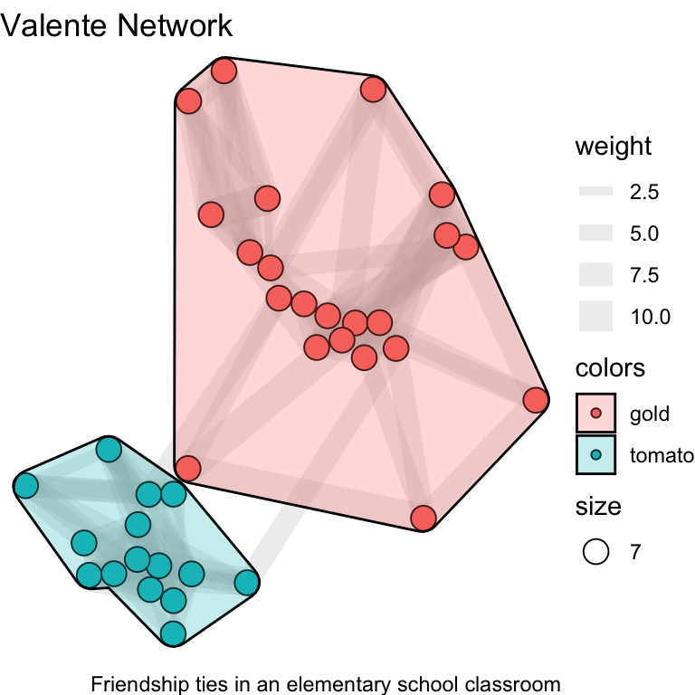
Two-mode Data, Briefly
In a few weeks we will talk about duality and two-mode networks. Here is a quick example of how we might bring a two-mode network into igraph.
I’ve collected data on Star Wars movies from imdb.com. I copied and pasted the top 15 actors in each of the first six movies into excel and saved as a csv. We can read the csv into a data frame and then use graph_from_data_frame() to read into igraph.
star.wars <- read.csv("data/star_wars.csv" , header=TRUE)
sw.g <- graph_from_data_frame(star.wars)
print(sw.g)IGRAPH ebe20cd DN-- 56 90 --
+ attr: name (v/c)
+ edges from ebe20cd (vertex names):
[1] Liam Neeson ->Episode 1: The Phantom Menace
[2] Ewan McGregor ->Episode 1: The Phantom Menace
[3] Natalie Portman ->Episode 1: The Phantom Menace
[4] Jake Lloyd ->Episode 1: The Phantom Menace
[5] Ian McDiarmid ->Episode 1: The Phantom Menace
[6] Pernilla August ->Episode 1: The Phantom Menace
[7] Oliver Ford Davies->Episode 1: The Phantom Menace
[8] Hugh Quarshie ->Episode 1: The Phantom Menace
+ ... omitted several edgesYou can see that igraph is not reading the graph as bipartite as a B would be in the third slot. We need to use bipartite_mapping() to identify the two modes.
bipartite_mapping(sw.g)$res
[1] TRUE
$type
Liam Neeson Ewan McGregor
FALSE FALSE
Natalie Portman Jake Lloyd
FALSE FALSE
Ian McDiarmid Pernilla August
FALSE FALSE
Oliver Ford Davies Hugh Quarshie
FALSE FALSE
Ahmed Best Anthony Daniels
FALSE FALSE
Kenny Baker Frank Oz
FALSE FALSE
Terence Stamp Brian Blessed
FALSE FALSE
Andy Secombe Hayden Christensen
FALSE FALSE
Christopher Lee Samuel L. Jackson
FALSE FALSE
Temuera Morrison Jimmy Smits
FALSE FALSE
Jack Thompson Leeanna Walsman
FALSE FALSE
Rose Byrne Keisha Castle-Hughes
FALSE FALSE
Silas Carson Jay Laga'aia
FALSE FALSE
Bruce Spence Wayne Pygram
FALSE FALSE
Mark Hamill Harrison Ford
FALSE FALSE
Carrie Fisher Peter Cushing
FALSE FALSE
Alec Guinness Peter Mayhew
FALSE FALSE
David Prowse Phil Brown
FALSE FALSE
Shelagh Fraser Jack Purvis
FALSE FALSE
Alex McCrindle Eddie Byrne
FALSE FALSE
Drewe Henley Billy Dee Williams
FALSE FALSE
Jeremy Bulloch John Hollis
FALSE FALSE
Des Webb Clive Revill
FALSE FALSE
Sebastian Shaw James Earl Jones
FALSE FALSE
Michael Pennington Kenneth Colley
FALSE FALSE
Episode 1: The Phantom Menace Episode 2: Attack of the Clones
TRUE TRUE
Episode 3: Revenge of the Sith Episode 4: A New Hope
TRUE TRUE
Episode 5: The Empire Strikes Back Episode 6: Return of the Jedi
TRUE TRUE V(sw.g)$type <- bipartite_mapping(sw.g)$typeWe can see that the different modes are identified by True or False. And we can set up different attributes like color or shape to distinguish between the two modes of actors and movies.
V(sw.g)$color <- ifelse(V(sw.g)$type, "lightblue", "salmon")
V(sw.g)$shape <- ifelse(V(sw.g)$type, "circle", "square")
E(sw.g)$color <- "lightgray"
plot.igraph(sw.g, layout=layout.fruchterman.reingold, vertex.label.color="black", edge.arrow.size=.5)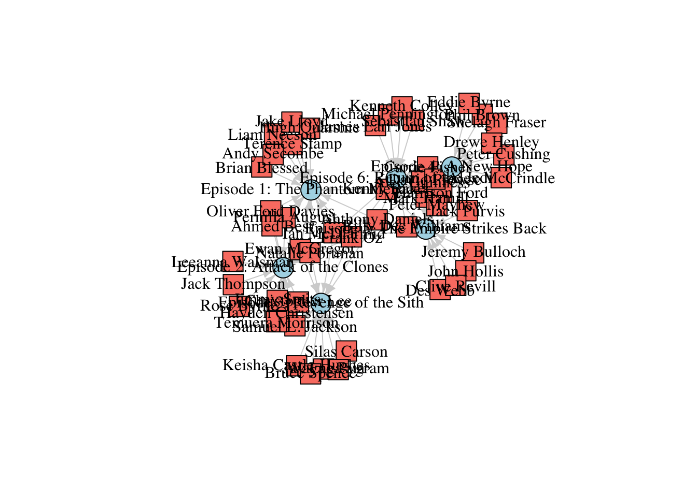
networkD3 , Briefly
We can also use the networkD3 package to easily visualize interactive networks. You can read an igraph object into networkD3 with the igraph_to_networkD3 function.
sw.d3 <- igraph_to_networkD3(sw.g)
simpleNetwork(sw.d3$links)Obviously we would want to play around with the settings to properly display labels etc.
Many other graph options
- For additional examples see (http://kateto.net/networks-r-igraph)
- Animations of dynamic networks (networkDynamic package)
- More on Interactive networks
- Communities
- More on Bipartite networks
- Summarize big data